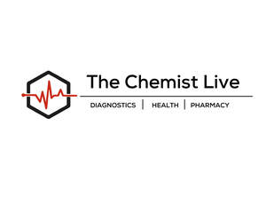

Trade Mark Journal No.2026/006 6 February 2026
UK00004328320 22 January 2026 (1,5,35,36,42,44)

- Class 1
- Clinical diagnostics, other than for medical or veterinary use.
- Class 5
- Pharmaceutical drugs; Medicine; Pharmaceutical preparations for use in dermatology; Pharmaceuticals.
- Class 35
- Retail or wholesale services for pharmaceutical, veterinary and sanitary preparations and medical supplies; Retail services for pharmaceutical, veterinary and sanitary preparations and medical supplies; Wholesale services for pharmaceutical, veterinary and sanitary preparations and medical supplies; Online retail store services relating to cosmetic and beauty products; Retail services in relation to pharmaceutical preparations; Online retail services relating to cosmetics; Business administration services in the field of healthcare.
- Class 36
- Medical insurance.
- Class 42
- Services of a chemist; Pharmaceutical drug development services; Chemists services; Pharmaceutical research services; Development of pharmaceutical preparations and medicines.
- Class 44
- Pharmacy services; Pharmacy advice; Preparation of prescriptions in pharmacies; Pharmacy advisory services; Preparation of prescriptions by pharmacists; Dispensing of pharmaceuticals; Medical and healthcare clinics; Health clinic services [medical]; Medical clinic services; Clinic (Medical -) services; Clinic services (Medical -); Pharmaceutical services; Pharmaceutical consultation; Medical clinics; Mobile medical clinic services; Health clinic services; Advisory services relating to pharmacies; Medical and healthcare services; Preparation and dispensing of medications; Medical services in the field of diabetes; Medication counseling.
WS Investment Group Ltd